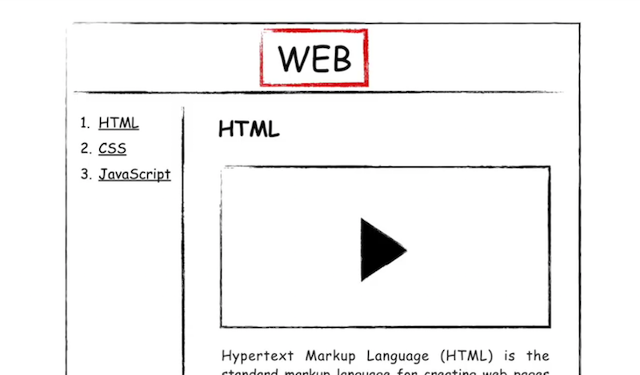
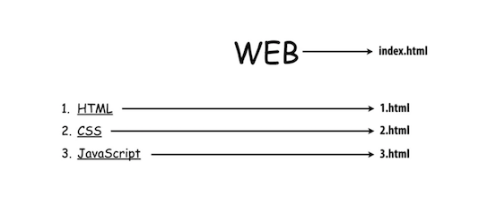

태그의 심화된 문법인 속성(attribute) : 태그의 이름만으로는 정보가 부족할 때 사용됩니다.
img : image 태그
src : source 속성
public domain image : unsplash.com
width="XX%"
li : list
ul : unordered list
ol : ordered list
ul : 다른 목록과 구분할 수 있도록 경계가 필요합니다. 이 때 사용하는 태그가 li 태그는 ul 태그를 꼭 필요로 합니다. ul 태그 역시 li 태그가 없다면 존재 가치가 없습니다.
정보를 잘 정리정돈하기 위한 체계, 다시 말해서 구조라는 것이 필요합니다.
title : 웹브라우저의 탭을 한 번 보세요. 웹페이지의 제목이 내용을 잘 반영하게 될 거에요.
특히 title 태그는 검색엔진이 웹페이지를 분석할 때 가장 중요하게 생각하는 태그이기 때문에 title 태그를 쓰지 않으면 정말 큰 손해랍니다.
영어가 아닌 문자로 웹페이지를 만들면 아래와 같이 문자가 깨지는 경우가 있을 거에요.
!doctype html
이 웹페이지가 HTML로서 만들어졌다는 것을 표현하기 위해서 문서의 시작에 아래와 같은 코드를 추가합니다.
html 태그
body 태그와 head 태그를 감싸는 하나의 태그
body : 본문
head : 본문을 설명하는 태그
!doctype html
html
head
title
meta charset="utf-8"
body
a : anchor
HTML의 약자 HyperText Markup Language의 HyperText가 바로 이 태그를 의미합니다
href : HyperText Reference의 약자입니다
target="_blank"
링크를 클릭했을 때 새창에서 페이지가 열리게 하는 속성입니다.
title : 이 링크가 어떤 내용을 담고 있는지를 툴팁으로 보여주는 기능입니다.

